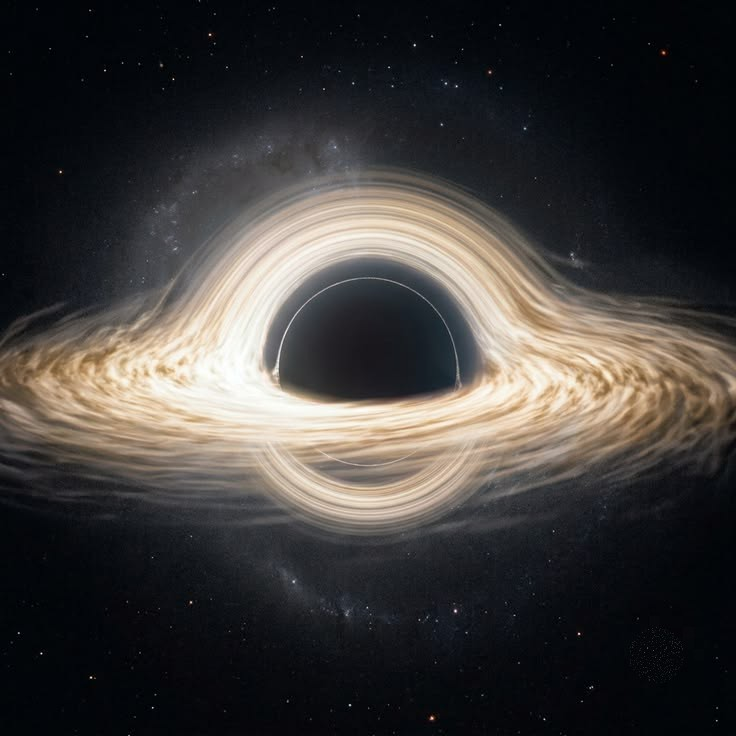
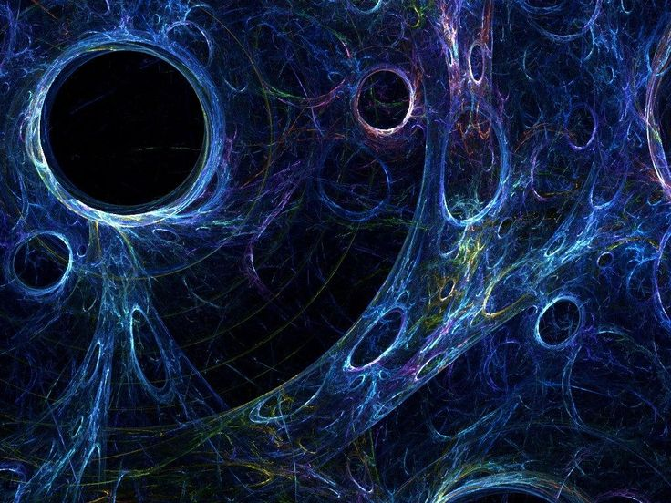
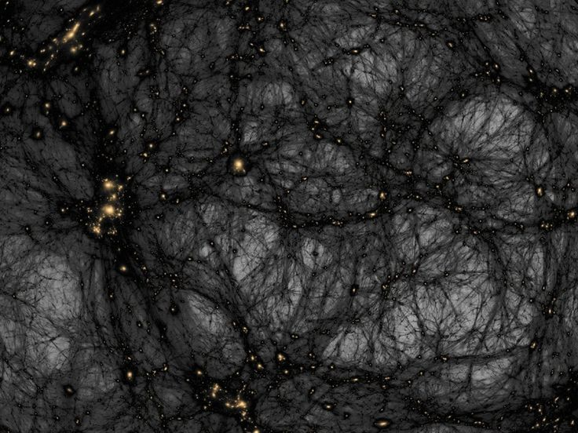
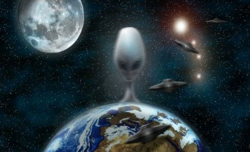

Agujeros negros
Un agujero negro es una región del espacio donde la gravedad es tan fuerte que nada puede escapar, ni siquiera la luz. Se forman cuando una estrella muy masiva colapsa sobre sí misma.
En su interior el tiempo se comporta de forma extraña y todo lo que cruza su horizonte de sucesos desaparece para siempre.

Materia oscura
La materia oscura es una forma de materia que no emite ni refleja luz, por eso no podemos verla directamente. Solo sabemos que está ahí por el efecto que tiene sobre la gravedad de las galaxias.
Se cree que forma alrededor del 27% del universo, mucho más que toda la materia que conocemos.

Energía oscura
La energía oscura es una fuerza misteriosa que hace que el universo se expanda cada vez más rápido. Nadie sabe exactamente qué es, pero se calcula que ocupa cerca del 68% del universo.

Vida extraterrestre
Todavía no tenemos pruebas de vida fuera de la Tierra, pero el universo es tan enorme que muchos científicos creen que sería raro estar solos. Se buscan señales en planetas con agua y condiciones parecidas a las nuestras. En 1950 el físico Enrico Fermi lanzó la pregunta que sigue sin respuesta: si el universo lleva tanto tiempo y tiene tantos lugares, ¿dónde está todo el mundo? A eso se le llama la paradoja de Fermi. En 1977, el radiotelescopio Big Ear captó un pulso de radio de 72 segundos tan fuerte que el astrónomo que lo revisó escribió "Wow!" al margen de la impresión, y por eso se le conoce así. Nunca volvió a repetirse, y hasta hoy nadie sabe qué lo causó. Más recientemente, el telescopio James Webb detectó en un planeta lejano moléculas que en la Tierra solo producen los seres vivos, aunque el hallazgo todavía se discute. Y si algún día llega una respuesta, no sería una charla con alguien de otro país: sería con algo que pudo existir millones de años antes que nosotros. Llevamos toda nuestra historia gritando al vacío, y todavía no sabemos si alguien escucha.